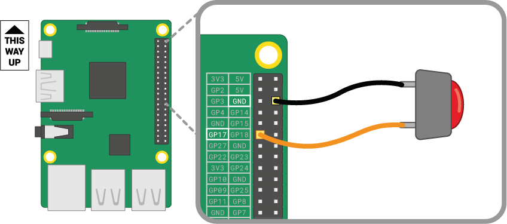

Python
Written by Dillon Hicks
Variables and Types
Types
As you may have seen in other coding languages, different variables have different types. Some of the types we will go over shortly are:
- Integers and Floats (
int,float)- Whole digits and decimals
- Strings (
str)- Text Data, (We will talk more about strings in the next section)
- Booleans (
bool)- True and False variables
Python has many different types, including many different data structures that are incredibly useful, but we will start with these for a basis of your Python knowledge.
Variables
We can save data of these types with variables. Variables are set with the variable name on the left of the =, and the data you want to set as the variable on the right.
Numbers can be saved into a variable var as such:
- Integers:
var = 1 - Floats:
var = 1.0
Note that floats have a decimal place. These decimals are stored with IEEE 754-2008 precision, commonly known as a double
Strings can be saved with text between single or double quotes
var = 'ECE 196'var = "ECE 196"
You can even create multiline strings with triple quotes.
Booleans variables can be set with True or False, note that True and False are capitalized.
var = Truevar = False
Printing
As you have seen in many other coding languages, outputting the values of variables can be a very useful way to debug your code and provide feedback to your user of your program. Luckily, this is easy to do in Python, you can simply use the print operator.
For example, if the variable a is holding the number 2, we can print this variable simply with
This is much shorter than other languages for example:
- C++ :
cout >> a; - Java :
System.out.println(a)
This is one big advantage of python - the code is very readable and succinct!
Types
You can get the type of any variable with the type() function
a = 2
type_a = type(a)
# prints type_a, should print int
print(type_a)
b = "ECE 196"
type_b = type(b)
# prints type_a, should print str
print(type_b)
This can useful if you want to check what type your data is before you do some operations. For example, say you want to square a number, you can first check if the variable is a number before you square it so your program doesn't crash.
Basic Operations
Number Operations
You can do basic arithmetic with these numbers with the following operators. These operators are used similarly to other languages, and follow PEMDAS order.
| Operator | Operation | Examples |
|---|---|---|
+ |
Addition | 1 + 2 = 3 |
- |
Subtraction | 1 - 2 = -1 |
* |
Multiplication | 2 * 2 = 4 |
/ |
Division | 1 / 2 = 0.5 |
% |
Modulus | 5 % 2 = 1 |
** |
Exponent | 8 ** 2 = 64 |
// |
Floor Division | 10 // 3 = 3 |
For example, you can use these below as such:
Boolean Operations
You can use and, or, and nor to compare two different boolean variables. If you are not familiar with how boolean logic operations such as and, or, and nor operate, please check out this wikipedia article on logic gates
and
- If both variables are True return True
or
- If one or more of the two variables are True return True
not
- If variable is True, return False, if False, return True
Boolean operations, like Python arithmetic operations, follow an order of operations. Python first evaluates not, then and, and lastly or if the operations are given in a single line.
Below is an example of how boolean operations can be used in your code:
t_var = True
f_var = False
#Should print False, since the pair is not (True, True)
print(t_var and f_var)
#Should print True, since one of the values in the pair are True
print(t_var or f_var)
#Should print False, since not True is False
print(not(t_Var))
In addition, we can use boolean comparison operators. These can be used between numbers to compare their values. The order of operations for these operators is left to right.
| Operator | Operation |
|---|---|
== |
Equal to |
!= |
Not equal to |
< |
Less than |
> |
Greater than |
<= |
Less than or equal to |
>= |
Greater than or equal to |
Below is an example of how these comparison operations can be used:
a = 10
b = 13
# Should print False, 10 is not equal to 13
print(a == b)
# Should print True, 10 is not equal to 13
print(a != b)
# Should print False, 10 is not greater than 13
print(a > b)
# Should print True, 10 is less than 13
print(a < b)
Conditionals
Whitespace
One thing that we haven't mentioned yet, but is a very important aspect of python is Whitespace.
Whitespace is the area taken up in your code by lines, spaces, and tabs. In many languages, the amount of space and linebreaks you put between statements doesn't really matter. With these other languages, you can format code however you want; tabs, spaces, newlines, can be essentially up to you.
However, in python, this is not the case. Tabs, newlines, and spaces are very important, and improper uses of whitespace can result in errors, more specifically IndentationError. Whitespace is important in the next few sections, so make sure to keep in mind that Whitespace in python is important.
If, else if, else
You may have seen conditionals in other coding languages before, but conditionals in python work similarly as other languages, but with the caveat of whitespace.
Conditionals will run the code indented underneath them if the condition is met. Conditionals can be used in python with if, elif, and else.
ifwill run the code indented under it if the statement, followed by a colon, is evaluated toTrue
bool_var = True
#Can alternatively use if bool_var:
if bool_var == True:
print("Your variable is True")
elifis short for else if. If theifstatement and all otherelifstatements above it at the same indentation level all evaluate to false, and the statement in theelifstatement is evaluated toTrue, then the code under thatelifstatement will run.elifmust be followed by anifstatement or anotherelifstatement.
The definition of the elif is a bit confusing, but if you are familiar with else if from other languages, or use it, it is fairly easy to understand!
if bool_var == False:
print("Your variable is False")
elif bool_var == True:
print("Your variable is True")
elsestatements will evaluate if theifstatement andelifstatements above it at the same indentation level all evaluate toFalse.elsemust follow a previousifstatement and all otherelifstatements.
With this, we can see how all of these conditional statements can be chained together to do different things.
bool_var = True
if bool_var == False:
print("Your variable is False")
elif bool_var == None:
print("Your variable is None")
else:
print("Your variable is neither False nor None")
Hint

You might be wondering why these operations are useful, so we will be going over an example you might use in your projects. Let's say you want to read when a button is being pressed, and do something on that button press. Let's say that when your button is being held down, the on_press variable is True, False otherwise. If you want to do something on this button press, you can simply use the conditional
You can even chain this together with multiple buttons, for example if two variables are set by two buttons, on_press_1 and on_press_2 respectively, if you want to do something when only related to only one button when it is pressed, you can use the following:
Now onto the problem...
[Problem 2] Microcontroller Testing
Question
You have a python microcontroller that has very sensitive electronics attached and you want to ensure that your microcontroller is recieving a proper power source.
Your microcontroller can detect the amperage and voltage of the electricity, however, your electronics attached say that your microcontroller needs between 12 and 13 watts. As a good ECE 35 student you of course know that the wattage can be calculated with wattage = amperage * voltage.
Using a measurement for the amperage and voltage given to your microcontroller, print "Too little power", if the wattage is below 12, "Too much power", if the wattage is above 13, and "Sufficient power" otherwise.
Hint: use boolean comparison operators and conditionals